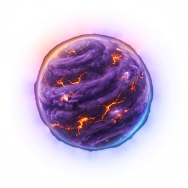
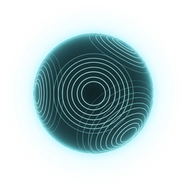
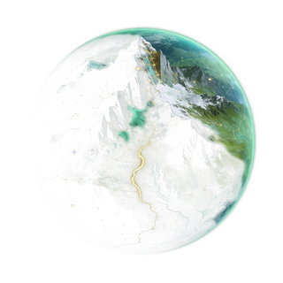
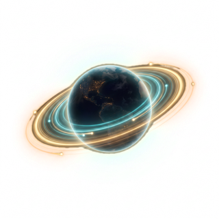
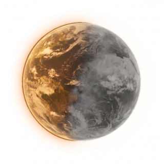
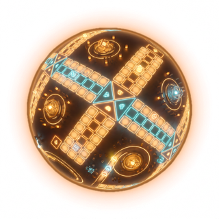
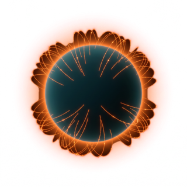
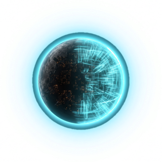

Un Genially por planeta, renovados por el equipo. Aquí irán apareciendo los enlaces públicos de cada tema; mientras tanto, la carpeta de trabajo del equipo.
La carpeta requiere acceso al equipo de Genially. Los enlaces públicos de cada tema se añadirán abajo.








_site_data.py → GENIALLYS[n]["view"] y se regenera la web; el hueco del tema pasa a «Publicado» con el Genially incrustado.Portada con el fondo de espacio y el planeta-halo → intro (vídeo de llegada) → contenido del tema sobre los fondos de superficie → los 2 retos → cierre (vídeo) → recompensa: el fragmento del tripulante + su insignia y carta.
Todo está en el paquete DRIVE_EQUIPO_STARGATE (Drive): una carpeta por tema con fondos, clips, insignias, carta, retos y enlaces, más el documento «Qué va en cada Genially» con la miniatura de cada recurso. Los vídeos se insertan desde YouTube con el enlace de la cronología.